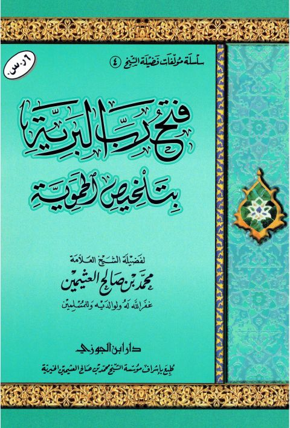

Downloads need an internet connection.
فتح رب البرية بتلخيص الحموية- دار ابن الجوزي
Authors: محمد بن صالح العثيمين
Publishers: دار ابن الجوزي
**▫️ العنوان: فتح رب البرية بتلخيص الحموية- دار ابن الجوزي** ▪️ المؤلف: #محمد_بن_صالح_العثيمين ▫️ الناشر: #دار_ابن_الجوزي ▪️ تاريخ النشر: 1426هـ 2005م ▫️ بلد النشر: الدمام، #السعودية ▪️ الطبعة: 1 ▫️ عدد الأجزاء: 1 ▪️ الصفحات: 112 ▫️ نوع الوعاء: #كتاب ▪️ التصنيف الرئيسي: #العقيدة_والمذاهب_والأديان ۪